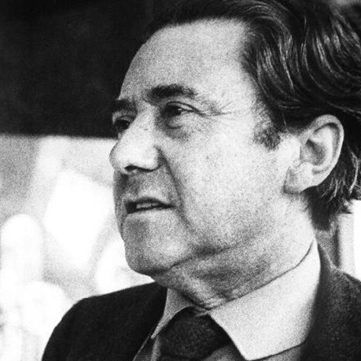
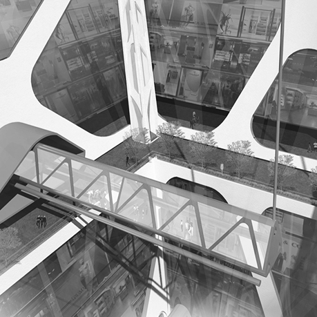
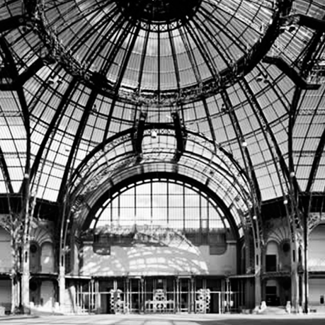
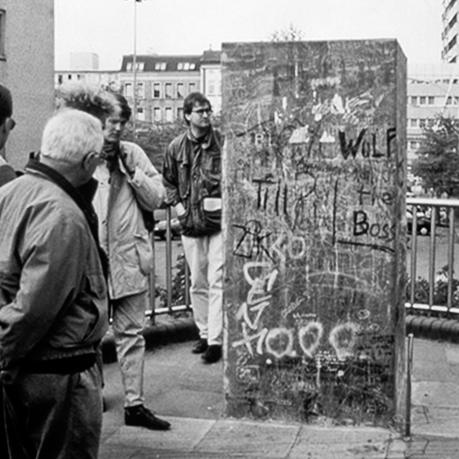
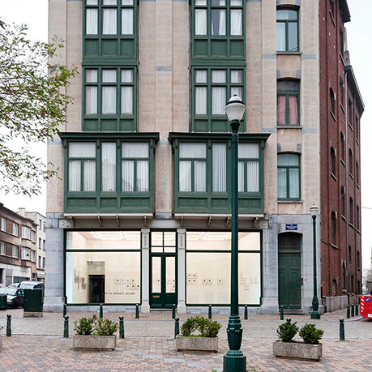
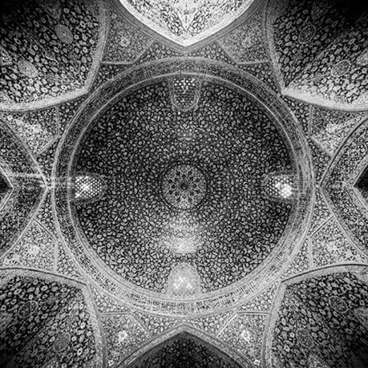

/ Artist Collection /
Gordon Matta-Clark
B. 1943, New York
Like his father, the Surrealist painter Roberto Sebastian Matta Echaurren1, Gordon Matta-Clark studied to be an architect. While it never became his profession, architecture—with its inextricable relationship to private and public space, urban development and decay–became his medium and subject matter. Using a practice that fused Conceptual art’s critique of cultural institutionalization, Earth art’s direct involvement with the environment, and Performance art’s engagement with sheer physicality, Matta-Clark literally sliced into abandoned buildings to create dizzying, Piranesian2 spaces sculpted from voids and fissures. By destructuring existing sites, he sought to reveal the tyranny of urban enclosure. The economic implications of private property are at play in Matta-Clark’s Fake Estates, which incorporate deeds to microplots of land—slivers of curbsides, and alleyways in Queens—that the artist bought at auction for 25 dollars a piece and combined with maps and montaged images of each site. Fascinated by the idea of untenable but ownable space, Matta-Clark purchased these residual parcels to comment on the arbitrariness of property demarcation.
Conical Intersect, Matta-Clark’s contribution to the Paris Biennale3 of 1975, manifested his critique of urban gentrification in the form of a radical incision through two adjacent 17th-century buildings designated for demolition near the much-contested Centre Georges Pompidou, which was then under construction. For this antimonument4, or “nonument,” which contemplated the poetics of the civic ruin, Matta-Clark bored a tornado-shaped hole that spiraled back at a 45-degree angle to exit through the roof. Periscopelike, the void offered passersby a view of the buildings’ internal skeletons.
Office Baroque5, a lyrical cutting through a five-story Antwerp office building, was the artist’s second-to-last architectural project before his untimely death. Inspired by overlapping teacup rings left on a drawing, the carving was organized around two semicircles that arced rhythmically through the floors, creating a rowboat shape at their intersection. Matta-Clark described the piece as “a walk through a panoramic arabesque6.“ As in all his interventions, the building itself constituted the work of art. To counter the ephemeral nature of his sculptural gestures, he emulated their dynamic spatial and temporal qualities in unique photographs made by splicing and grafting negatives to create quasi-Cubistic images. No substitute for balancing precariously on the flayed edge of a structural cut, the photographs nevertheless document the essential aesthetic of Matta-Clark’s “anarchitecture.”






1
3
5
2
4
6